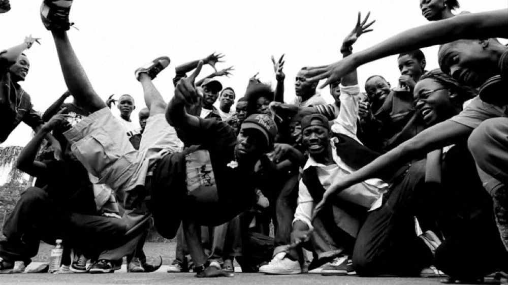

Le Radici
L'Hip Hop è nato nel South Bronx, New York, negli anni '70. Giovani afroamericani e latini crearono un nuovo movimento culturale in risposta a difficili condizioni sociali. DJ pionieri come Kool Herc iniziarono a isolare le parti ritmiche (breakbeat) dei dischi funk e soul, creando la base per i primi MC (Master of Ceremonies) che ci rappavano sopra durante feste di quartiere chiamate block party.
Scopri di più